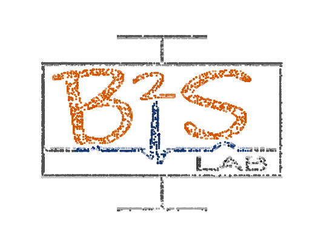
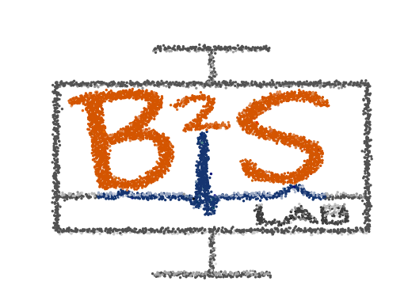

import numpy as np
import matplotlib.pyplot as plt
import matplotlib.animation as animation
from scipy.spatial import KDTree
import cv2import numpy as np
import matplotlib.pyplot as plt
import matplotlib.animation as animation
from scipy.spatial import KDTree
import cv2
# Load the logo as a color image
logo_path = "b2slab.png"
logo_img = cv2.imread(logo_path, cv2.IMREAD_COLOR) # Load in BGR color
logo_img = cv2.flip(logo_img, 0) # Flip vertically to correct orientation
logo_img = cv2.resize(logo_img, (200, 200)) # Resize for processing
# Extract non-white pixels (keep only important logo details)
mask = np.all(logo_img < [230, 230, 230], axis=-1) # Avoid white background
y_indices, x_indices = np.where(mask)
# Extract corresponding colors (convert BGR to RGB)
colors = logo_img[y_indices, x_indices][:, ::-1] / 255.0 # Normalize RGB colors
# Convert (x, y) coordinates into a NumPy array
logo_points = np.vstack((x_indices, y_indices)).T
# Normalize logo points for scaling
logo_points = logo_points - np.mean(logo_points, axis=0) # Center the points
logo_points = logo_points / np.max(np.abs(logo_points), axis=0) # Normalize to [-1, 1]
# Generate initial random points and random colors
num_points = len(logo_points)
random_points = np.random.uniform(-1, 1, (num_points, 2))
random_colors = np.random.rand(num_points, 3) # Random initial colors
# KDTree for nearest neighbor movement
logo_tree = KDTree(logo_points)
# Initialize figure
fig, ax = plt.subplots()
scat = ax.scatter(random_points[:, 0], random_points[:, 1], c=random_colors, s=2)
# Update function for animation
def update(frame):
global random_points, random_colors
_, nearest_idx = logo_tree.query(random_points)
target_positions = logo_points[nearest_idx]
target_colors = colors[nearest_idx]
# Move points towards their target positions
random_points += (target_positions - random_points) * 0.05 # Adjust speed factor
# Gradually transition colors
random_colors += (target_colors - random_colors) * 0.1
# Update scatter plot
scat.set_offsets(random_points)
scat.set_facecolors(random_colors)
return scat,
# Create animation
ax.set_xlim(-1.2, 1.2)
ax.set_ylim(-1.2, 1.2)
ax.axis("off")
ani = animation.FuncAnimation(fig, update, frames=100, interval=50, blit=False)
# Save animation as a video
ani.save("b2sanim.mp4", fps=30, dpi=200)
plt.show()
import numpy as np
import matplotlib.pyplot as plt
import matplotlib.animation as animation
from scipy.spatial import KDTree
import cv2
import time
# Load the logo as a color image
logo_path = "b2slab.png"
logo_img = cv2.imread(logo_path, cv2.IMREAD_COLOR) # Load in BGR color
logo_img = cv2.flip(logo_img, 0) # Flip vertically to correct orientation
logo_img = cv2.resize(logo_img, (200, 200)) # Resize for processing
# Extract non-white pixels (keep only important logo details)
mask = np.all(logo_img < [230, 230, 230], axis=-1) # Avoid white background
y_indices, x_indices = np.where(mask)
# Extract corresponding colors (convert BGR to RGB)
colors = logo_img[y_indices, x_indices][:, ::-1] / 255.0 # Normalize RGB colors
# Convert (x, y) coordinates into a NumPy array
logo_points = np.vstack((x_indices, y_indices)).T
# Normalize logo points for scaling
logo_points = logo_points - np.mean(logo_points, axis=0) # Center the points
logo_points = logo_points / np.max(np.abs(logo_points), axis=0) # Normalize to [-1, 1]
# Generate initial random points and random colors
num_points = len(logo_points)
random_points = np.random.uniform(-1, 1, (num_points, 2))
random_colors = np.random.rand(num_points, 3) # Random initial colors
# Create shuffled versions of the logo positions
shuffled_logo_1 = logo_points[np.random.permutation(num_points)]
shuffled_logo_2 = logo_points[np.random.permutation(num_points)]
# KDTree for nearest neighbor movement
logo_tree = KDTree(logo_points)
# Animation States
state = 0 # 0 = random, 1 = logo, 2 = shuffled_1, 3 = shuffled_2, then repeat
state_duration = 50 # Number of frames each phase lasts
pause_duration = 10 # Number of frames to hold the logo
current_step = 0
# Initialize figure
fig, ax = plt.subplots()
scat = ax.scatter(random_points[:, 0], random_points[:, 1], c=random_colors, s=2)
# Smooth transition control
def smooth_curve(t):
""" Creates an ease-in-out effect for movement """
return 3 * t**2 - 2 * t**3 # Sigmoid-like smooth step function
# Update function for animation
def update(frame):
global random_points, random_colors, state, current_step
# Determine target positions based on state
if state == 0:
target_positions = random_points # Stay random
elif state == 1:
target_positions = logo_points # Move to the logo
elif state == 2:
target_positions = shuffled_logo_1 # Move to shuffled logo
elif state == 3:
target_positions = shuffled_logo_2 # Move to another shuffled version
# Compute movement factor
t = smooth_curve(current_step / state_duration)
random_points += (target_positions - random_points) * 0.05 # Smooth movement
random_points += np.random.uniform(-0.005, 0.005, random_points.shape) # Small jitter effect
# Gradually transition colors
target_colors = colors if state != 0 else np.random.rand(num_points, 3)
random_colors += (target_colors - random_colors) * 0.1
# Update scatter plot
scat.set_offsets(random_points)
scat.set_facecolors(random_colors)
# Manage state transitions
current_step += 1
if current_step >= state_duration:
if state == 1 and current_step >= state_duration + pause_duration:
state = 2 # Move to shuffled_1
current_step = 0
elif state == 2:
state = 3 # Move to shuffled_2
current_step = 0
elif state == 3:
state = 0 # Back to random
current_step = 0
else:
state = 1 # Move to the logo
current_step = 0
return scat,
# Create animation
ax.set_xlim(-1.2, 1.2)
ax.set_ylim(-1.2, 1.2)
ax.axis("off")
ani = animation.FuncAnimation(fig, update, frames=500, interval=50, blit=False)
# Save animation as a video
#ani.save("b2s_cycle_animation.mp4", fps=30, dpi=200)
ani.save("b2s_cycle_animation.webm", fps=30, dpi=200, codec="libvpx-vp9", extra_args=["-pix_fmt", "yuva420p"])
plt.show()